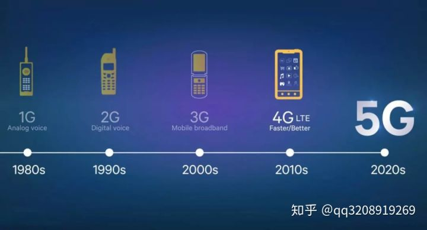
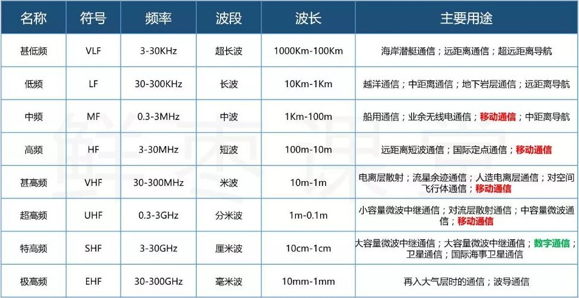
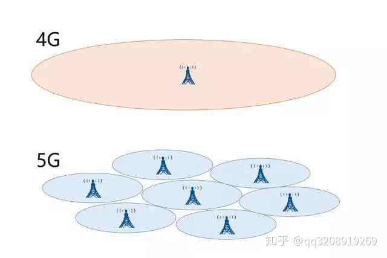
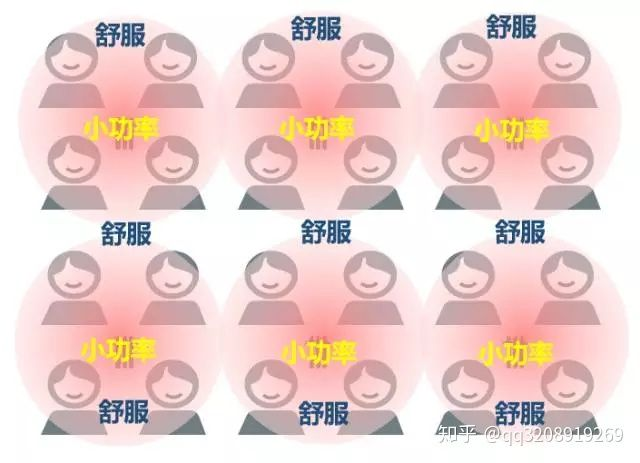

主页
1.1.
前言
1.2.
5G概述
1.2.1.
5G和4G对比
1.3.
5G相关组织
1.4.
5G技术架构
1.5.
5G应用和现状
1.5.1.
5G应用
1.5.2.
5G现状
1.5.2.1.
中国
1.5.2.1.1.
苏州
1.6.
附录
1.6.1.
名词解释
1.6.1.1.
CPE
1.6.2.
参考资料
本书使用 GitBook 发布
5G和4G对比
5G和4G对比
相关背景知识
从1G到5G

移动通信架构
频谱分布和用途

4G和5G的区别
基站分布
图

文字
4G
宏基站
用户体验
5G
微基站
举例
中国移动
中兴
用户体验

频谱占用
手机天线对比
5G时代，同一基站下的两个用户，如果互相进行通信，他们的数据将不再通过基站转发，而是直接手机到手机
results matching "
"
No results matching "
"